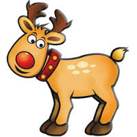

Santa
Tomten kan också kallas tomtevätte, och i Skåne, Danmark och Norge kallas han företrädesvis nisse eller goanisse (jfr uttrycket Nisse god dräng), ursprungligen ett noanamn.[1] På svenska finns även puke som är en smådjävul[2], pyske är en liten människa[3], hempjäske och pixy är en tomtegubbe. På finska finns tonttu som är inlånat från svenskan. Liknande husandar hos andra folk är de romerska penates och lares, den ryska domovoj (även hos andra slaver), hob i England, brownie i Skottland och Heinzelmännchen i Tyskland.
Rudolph
Rudolf är ett mansnamn med forntyskt ursprung, Hruodulf bildat ur ord med betydelsen ära, beröm och varg. Namnet har använts i Sverige sedan slutet av 1300-talet. Den feminina varianten är Rudolfina. Rudolf är ett vanligt namn bland de manliga pensionärerna i Sverige, men bland de yngsta är namnet sällsynt. Endast någon enstaka pojke i varje årskull får namnet som tilltalsnamn/förstanamn. Den 31 december 2005 fanns det totalt 5 102 personer i Sverige med namnet, varav 793 med det som tilltalsnamn/förstanamn. År 2003 fick 21 pojkar namnet, varav 1 fick det som tilltalsnamn/förstanamn.